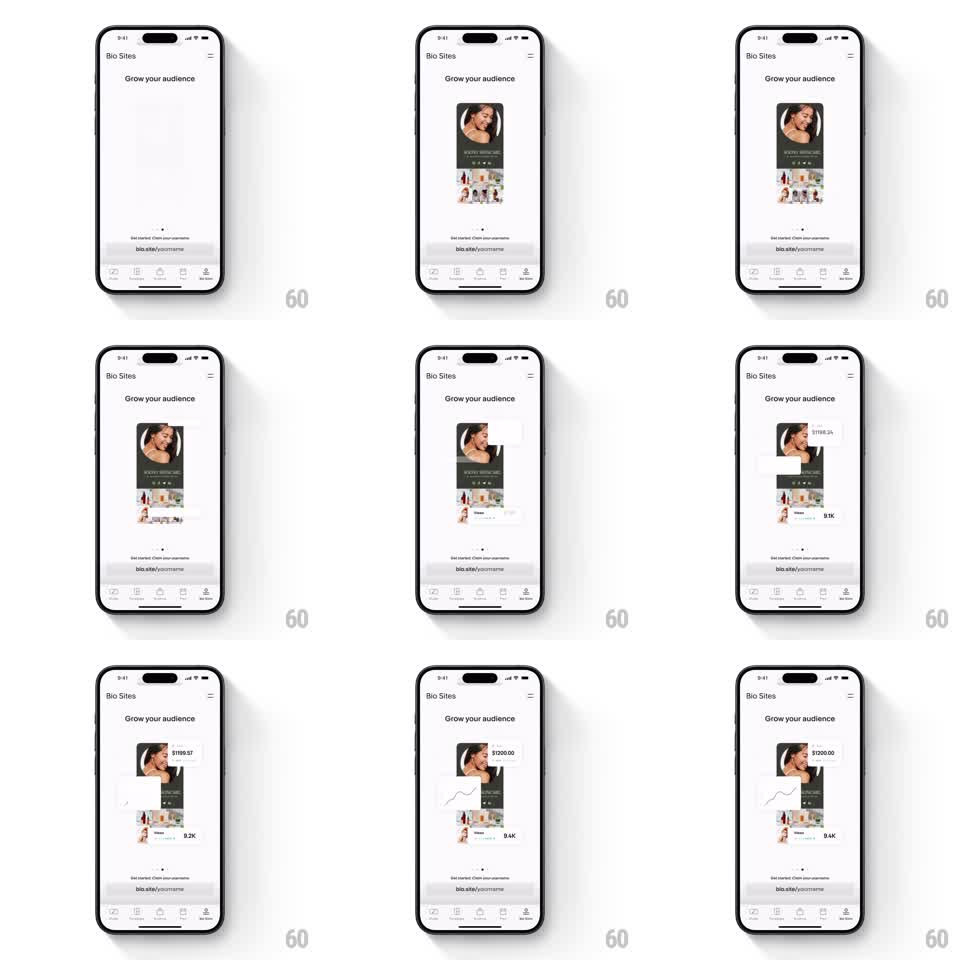

Media
Frame-by-frame

Rebuild this animation 1:1: Unfold's Bio Sites "Grow your audience" intro - a phone mockup of a bio site profile slides in, then analytics stat cards fade and scale in around it while their numbers count up and a sparkline draws itself.

Rebuild this animation 1:1: Unfold's Bio Sites "Grow your audience" intro - a phone mockup of a bio site profile slides in, then analytics stat cards fade and scale in around it while their numbers count up and a sparkline draws itself.
## Integration
Integration: stack-agnostic spec - springs given as stiffness/damping, timed motions as duration + curve; map every value to your framework and animation library of choice.
## Scene
Light content page: top bar ("Bio Sites" title, hamburger icon), centered headline "Grow your audience", phone-frame mockup (profile header photo, name, content grid), floating analytics cards (revenue figure, "Views 9.1K" stat, sparkline chart), caption + "bio.site/yourname" link, bottom tab bar.
## Motion spec
Pattern: staged data-viz entrance with count-ups, ~2.5s.
- Mockup slides up (translateY 40px -> 0) and fades in over 500ms, ease-out.
- Stat cards pop in around the mockup (scale 0.6 -> 1, opacity 0 -> 1, spring ~300/18), staggered 150ms: revenue card top-left, views card mid-right, sparkline card bottom-left.
- The revenue figure counts up ($0 -> $1189.34) over 800ms, ease-out, starting when its card lands.
- The sparkline strokes itself left to right (stroke-dashoffset, 600ms) after its card settles.
- Header, caption, and tab bar stay static.
## Calibration
- Count-up uses a tabular font or fixed-width layout so digits don't jitter the card.
- Cards pop from their own center, not the mockup's - scaling from the wrong origin reads as a zoom.
## Reduced motion
Cards crossfade in with final numbers already rendered; no counting, no line draw.
## Don't miss
- The count-up is the payoff: it must run exactly once per entrance, never restart on re-render.
- Keep the mockup as the visual anchor; stat cards orbit it but never cover the profile photo.